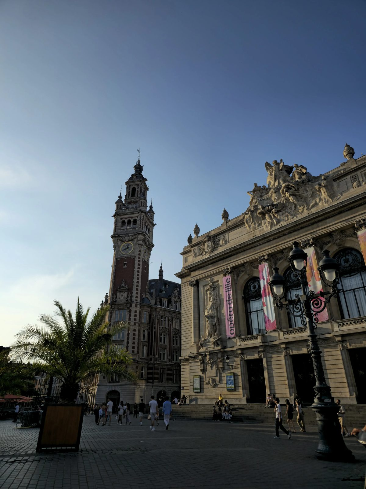

An independent guide to Lille without the clichés: where to eat, where to go out, where to get pleasantly lost in the streets of Vieux-Lille, and how to enjoy the city like a local rather than a rushed tourist.

Ninety chalets on Place Rihour, the Ferris wheel on the Grand'Place, and six weeks of lights. Where to go, when to go to dodge the crowds, and what to budget.
Read the Christmas guideThe Christmas market, the Braderie, and the fixtures that shape the Lille year.
Read moreVieux-Lille, the Belfry, the Palais des Beaux-Arts, the Citadelle: the essentials plus a few lesser-known spots.
Read moreCarbonnade, welsh, Meert waffles, and the best tables in Vieux-Lille for every budget.
Read moreFrom rue Solférino to the bars of Vieux-Lille and on to Wazemmes, depending on the mood you're after.
Read moreFour cities less than an hour away, easy to visit in a single day from Lille.
Read more